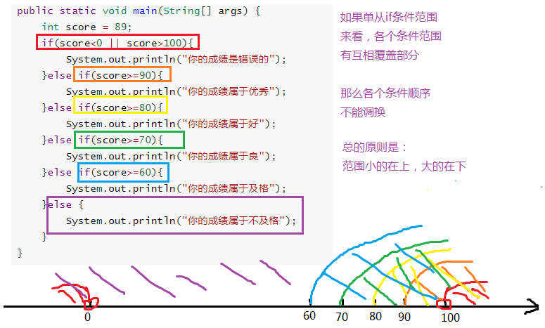

学习目标
-
掌握键盘输入各种数据类型的值
-
理解if语句的格式和执行流程
-
理解if...else语句的格式和执行流程
-
理解if...else if语句的格式和执行流程
-
了解if语句和三元运算符互换
-
理解switch选择语句的格式和执行流程
-
掌握switch选择语句接收的数据类型
-
理解case的穿透性
-
掌握break在switch中的使用
-
掌握default在switch中的使用
-
了解Math.random()和Math.sqrt(x)等的使用
-
理解for语句的格式和执行流程
-
理解while语句的格式和执行流程
-
了解do...while语句的格式和执行流程
-
了解跳出语句break，continue的意义
-
理解死循环的执行流程
-
理解循环嵌套的执行流程
第三章 流程控制
不论哪一种编程语言，都会提供两种基本的流程控制结构：分支结构和循环结构。其中分支结构用于实现根据条件来选择性地执行某段代码，循环结构则用于实现根据循环条件重复执行某段代码。
流程控制语句分类：
- 顺序结构：从上而下顺序执行每一行代码
- 分支结构：或选择结构，根据条件选择执行不同的代码
- 循环结构：重复执行某一些代码
3.1 顺序结构
任何编程语言中最常见的程序结构就是顺序结构。顺序结构就是程序从上到下逐行地执行，中间没有任何判断和跳转。如果main方法的多行代码之间没有任何流程控制，则程序总是从上向下依次执行，排在前面的代码先执行，排在后面的代码后执行。
顺序结构代码执行流程图：

顺序结构代码示例：
public static void main(String[] args){ //顺序执行，根据编写的顺序，从上到下运行 System.out.println("程序开始："); int a=10; int b=20; int sum=a+b; System.out.println("sum="+sum);//求两个数的和 System.out.println("程序结束！");}键盘录入语句
以上程序是个求和的程序，我想在运行程序的时候，根据实际的输入的两个数，进行求和，就跟计算器一样，任意给两个数，计算得出结果，如何做？
完成键盘输入的代码步骤：
- （1）准备一个键盘扫描器（先导包或直接使用包名+类名）
- （2）提示要输入的信息
- （3）接收输入内容
示例代码：
xxxxxxxxxx//1、准备Scanner类型的变量//Scanner是一个引用数据类型，它的全名称是java.util.Scanner//input就是一个引用数据类型的变量了，赋给它的值是一个对象java.util.Scanner input = new java.util.Scanner(System.in);//System.in默认代表键盘输入//2、提示输入xxSystem.out.print("请输入一个整数：");//3、接收输入内容int num = input.nextInt();//列出各种数据类型的输入int num = input.nextInt();long bigNum = input.nextLong();double d = input.nextDouble();boolean b = input.nextBoolean();String s = input.next();char c = input.next().charAt(0);//先按照字符串接收，然后再取字符串的第一个字符（下标为0）语法案例一：改造求和案例
xpublic static void main(String[] args){System.out.println("程序开始：");//创建一个扫描器java.util.Scanner sc=new java.util.Scanner(System.in);System.out.println("请输入第一个整数：");int a=sc.nextInt();//从键盘接收一个整数System.out.println("请输入第二个整数：");int b=sc.nextInt();//从键盘接收一个整数int sum=a+b;System.out.println("sum="+sum);System.out.println("程序结束");}语法案例二：录入个人信息
xxxxxxxxxxclass Day03_Test02_Input{public static void main(String[] args){//这里变量取什么名，下面就用什么.//例如：这里取名input，下面就用input.java.util.Scanner input = new java.util.Scanner(System.in);System.out.print("请输入姓名：");String name = input.next();System.out.print("请输入年龄：");int age = input.nextInt();System.out.print("请输入性别：");//input.next()得到字符串，不管你输入几个字符，//.charAt(0)：从字符串中取出一个字符，(0)表示取第一个字符，(1)表示取第二个字符//charAt(index)：也是一个方法，从第二个单词开始首字母大写，所以A是大写char gender = input.next().charAt(0);System.out.print("请输入体重：");double weight = input.nextDouble();System.out.print("请输入是否已婚(true/false)：");boolean isMarry = input.nextBoolean();System.out.println("姓名：" + name);System.out.println("年龄：" + age);System.out.println("性别：" + gender);System.out.println("体重：" + weight);System.out.println("婚否：" + (isMarry?"是":"否"));}}
语法案例三：
next()与nextLine()接收字符数据的区别
xxxxxxxxxx/*next()方法：遇到空格等空白符，就认为输入结束nextLine()方法：遇到回车换行，就认为输入结束如果你在键盘输入过程中，遇到java.util.InputMismatchException，说明你输入的数据类型与接收数据的变量的类型不匹配*/class Day03_Test04_Input2{public static void main(String[] args){java.util.Scanner input = new java.util.Scanner(System.in);System.out.print("请输入姓名：");//String name = input.next();//张 三 只能接收张，后面的空格和三无法接收，被下面的输入接收String name = input.nextLine();System.out.println("name = " + name);System.out.print("请输入年龄：");int age = input.nextInt(); //23回车换行 这里只接收23，回车换行被下面的输入接收input.nextLine();//读取23后面的回车换行，但是这个不需要接收，只有下面一个输入是nextLine()情况下才需要这样，如果下面的输入是next()或者是nextInt(),nextDouble()等就不需要这么干System.out.println("age = " + age);System.out.print("请输入电话号码：");String tel = input.nextLine();System.out.println("tel = " + tel);}}练习：
键盘录入两个数据，获取这两个数据中的最大值（使用三目运算符）
键盘录入三个数据，获取这三个数据中的最大值（使用三目运算符）
键盘录入两个数据，比较这两个数据是否相等（使用三目运算符）
3.2 分支结构（选择结构）
3.2.1 分支结构：if语句第一种格式
if语句第一种格式： if
xxxxxxxxxxif(关系表达式)｛语句体;｝
执行流程
①首先判断条件表达式看其结果是true还是false
②如果是true就执行语句体
③如果是false就不执行语句体

- 语法案例演示1：
xxxxxxxxxx public static void main(String[] args){ System.out.println("开始"); // 定义两个变量 int a = 10; int b = 20; //变量使用if判断 if (a == b){ System.out.println("a等于b"); } int c = 10; if(a == c){ System.out.println("a等于c"); } System.out.println("结束"); }语法案例演示2
案例：从键盘输入年份，请输出该年的2月份的总天数。闰年2月份29天，平年28天。
闰年条件：（1）能被4整除，不能被100整除（2）能被400整除
xxxxxxxxxxpublic class Test {public static void main(String[] args) {java.util.Scanner input = new java.util.Scanner(System.in);System.out.print("请输入年份：");int year = input.nextInt();int days = 28;if(year%4==0 && year%100!=0 || year%400==0){days++;}System.out.println(year + "年的2月份共" + days + "天");input.close();}}public class Test { public static void main(String[] args) { java.util.Scanner input = new java.util.Scanner(System.in); System.out.print("请输入年份："); int year = input.nextInt(); int days = 28; if(year%4==0 && year%100!=0 || year%400==0) days++;//当语句块只有一句时，可以省略{}，但是建议还是保留比较靠谱 System.out.println(year + "年的2月份共" + days + "天"); input.close(); } }
3.2.2 分支结构：if语句第二种格式
if语句第二种格式： if...else
if(关系表达式) { 语句体1; }else { 语句体2; }
执行流程
①首先判断关系表达式看其结果是true还是false
②如果是true就执行语句体1
③如果是false就执行语句体2

语法案例演示1：
输入一个整数，判断是奇数还是偶数？
public static void main(String[] args){ // 判断给定的数据是奇数还是偶数 // 定义变量 int a = 1; if(a % 2 == 0) { System.out.println("a是偶数"); } else{ System.out.println("a是奇数"); } System.out.println("结束"); }语法案例演示2：if语句和三元运算符的互换
在某些简单的应用中，if语句是可以和三元运算符互换使用的。
求两个整数中大的一个
public static void main(String[] args) { int a = 10; int b = 20; //定义变量，保存a和b的较大值 int max; if(a > b) { max = a; } else { max = b; } //可以上述功能改写为三元运算符形式 max = a > b ? a : b; }public static void main(String[] args) { int a = 10; int b = 20; //定义变量，保存a和b的较大值 int max; if(a > b) max = a;//当语句块只有一个语句时，可以省略{}，但是不建议省略{} else max = b; //输出大的值 System.out.println(max); }
练习：求出最大值
从键盘输入三个数，求出最大值，用单分支if和双分支if..else来计算
class Day03_Test08_MaxValueExer{ public static void main(String[] args){ java.util.Scanner input = new java.util.Scanner(System.in); System.out.print("请输入第1个整数："); int a = input.nextInt(); System.out.print("请输入第2个整数："); int b = input.nextInt(); System.out.print("请输入第3个整数："); int c = input.nextInt(); /* int max;//存储三个数中的最大值 if(a > b){ max = a; }else{ max = b; } if(c > max){ max = c; } */ int max = a>b ? a : b; max = max>c ? max : c; System.out.println(a+","+b+","+c+"中最大的是："+ max); } }
3.2.3 分支结构：if语句第三种格式
if语句第三种格式：
if...else if ...else
if (判断条件1) { 执行语句1; } else if (判断条件2) { 执行语句2; } ... }else if (判断条件n) { 执行语句n; } else { 执行语句n+1; }
执行流程
①首先判断关系表达式1看其结果是true还是false
②如果是true就执行语句体1，然后结束当前多分支
③如果是false就继续判断关系表达式2看其结果是true还是false
④如果是true就执行语句体2，然后结束当前多分支
⑤如果是false就继续判断关系表达式…看其结果是true还是false
⑥…
⑦如果没有任何关系表达式为true，就执行语句体n+1，然后结束当前多分支。

语法案例演示1：
计算如下函数：x和y的关系满足如下： （1）x>=3； y = 2x + 1; （2）-1<=x<3； y = 2x; （3）x<-1； y = 2x – 1; 从键盘输入x的值，计算出y的值并输出。
public static void main(String[] args) { java.util.Scanner input = new java.util.Scanner(System.in); System.out.print("请输入x的值："); int x = input.nextInt(); int y; if (x>= 3) { y = 2 * x + 1; } else if (x >= -1 && x < 3) { y = 2 * x; } else { y = 2 * x - 1; } System.out.println("y的值是："+y); }改造：
public static void main(String[] args) { java.util.Scanner input = new java.util.Scanner(System.in); System.out.print("请输入x的值："); int x = input.nextInt(); int y; if (x>= 3) { y = 2 * x + 1; } else if (x >= -1) {//优化条件 y = 2 * x; } else { y = 2 * x - 1; } System.out.println("y的值是："+y); }

语法案例演示2：
通过指定考试成绩，判断学生等级
90-100 优秀
80-89 好
70-79 良
60-69 及格
60以下 不及格
public static void main(String[] args) { int score = 89； if(score<0 || score>100){ System.out.println("你的成绩是错误的"); }else if(score>=90 && score<=100){ System.out.println("你的成绩属于优秀"); }else if(score>=80 && score<90){ System.out.println("你的成绩属于好"); }else if(score>=70 && score<80){ System.out.println("你的成绩属于良"); }else if(score>=60 && score<70){ System.out.println("你的成绩属于及格"); }else { System.out.println("你的成绩属于不及格"); } }public static void main(String[] args) { int score = 89; if(score<0 || score>100){ System.out.println("你的成绩是错误的"); }else if(score>=90){ System.out.println("你的成绩属于优秀"); }else if(score>=80){ System.out.println("你的成绩属于好"); }else if(score>=70){ System.out.println("你的成绩属于良"); }else if(score>=60){ System.out.println("你的成绩属于及格"); }else { System.out.println("你的成绩属于不及格"); } }
3.2.4 分支结构：if..else嵌套
在if的语句块中，或者是在else语句块中， 又包含了另外一个条件判断（可以是单分支、双分支、多分支）
执行的特点： （1）如果是嵌套在if语句块中的 只有当外部的if条件满足，才会去判断内部的条件 （2）如果是嵌套在else语句块中的 只有当外部的if条件不满足，进入else后，才会去判断内部的条件
语法案例演示1:
public static void main(String[] args) { int score = 89; if(score<0 || score>100){ System.out.println("你的成绩是错误的"); }else{ if(score>=90){ System.out.println("你的成绩属于优秀"); }else if(score>=80){ System.out.println("你的成绩属于好"); }else if(score>=70){ System.out.println("你的成绩属于良"); }else if(score>=60){ System.out.println("你的成绩属于及格"); }else { System.out.println("你的成绩属于不及格"); } } }//省略{}的情况，else中嵌套了一个完整的多分支结构，也算是一个语句，称为复合语句，所以也可以省略{} public static void main(String[] args) { int score = 89; if(score<0 || score>100) System.out.println("你的成绩是错误的"); else if(score>=90){ System.out.println("你的成绩属于优秀"); }else if(score>=80){ System.out.println("你的成绩属于好"); }else if(score>=70){ System.out.println("你的成绩属于良"); }else if(score>=60){ System.out.println("你的成绩属于及格"); }else { System.out.println("你的成绩属于不及格"); } }
语法案例演示2：
从键盘输入一个年份，和月份，输出该年份该月的总天数
要求：年份为正数，月份1-12
public static void main(String[] args){ //从键盘输入一个年份，和月份 java.util.Scanner input = new java.util.Scanner(System.in); System.out.print("年份："); int year = input.nextInt(); System.out.print("月份："); int month = input.nextInt(); if(year>0){ if(month>=1 && month<=12){ //合法的情况 int days; if(month==2){ if(year%4==0 && year%100!=0 || year%400==0){ days = 29; }else{ days = 28; } }else if(month==4 || month==6 || month==9 || month==11){ days = 30; }else{ days = 31; } System.out.println(year+"年" + month + "月有" + days +"天"); }else{ System.out.println("月份输入不合法"); } }else{ System.out.println("年份输入不合法"); } }
3.2.5 分支结构：switch选择结构
语法格式：
switch(表达式){ case 常量值1: 语句块1; break; case 常量值2: 语句块2; break; ... default: 语句块n+1; break; }
执行过程：
（1）入口
- ①当switch(表达式)的值与case后面的某个常量值匹配，就从这个case进入；
- ②当switch(表达式)的值与case后面的所有常量值都不匹配，寻找default分支进入;不管default在哪里
（2）一旦从“入口”进入switch，就会顺序往下执行，直到遇到“出口”，即可能发生贯穿
（3）出口
- ①自然出口：遇到了switch的结束}
- ②中断出口：遇到了break等
注意：
（1）switch(表达式)的值的类型，只能是：4种基本数据类型（byte,short,int,char），两种引用数据类型（JDK1.5之后枚举、JDK1.7之后String）
（2）case后面必须是常量值，而且不能重复
语法案例演示1：
public class SwitchDemo01 { public static void main(String[] args) { //定义指定的星期 int weekday = 5; //switch语句实现选择 switch(weekday) { case 1: System.out.println("星期一"); break; case 2: System.out.println("星期二"); break; case 3: System.out.println("星期三"); break; case 4: System.out.println("星期四"); break; case 5: System.out.println("星期五"); break; case 6: System.out.println("星期六"); break; case 7: System.out.println("星期日"); break; default: System.out.println("你的数字有误"); break; } } }语法案例演示2：case的穿透性
在switch语句中，如果case的后面不写break，将出现穿透现象，也就是一旦匹配成功，不会在判断下一个case的值，直接向后运行，直到遇到break或者整个switch语句结束，switch语句执行终止。
练习：根据指定的月份输出对应季节（if语句）
/* * 需求：定义一个月份，输出该月份对应的季节。 * 一年有四季 * 3,4,5 春季 * 6,7,8 夏季 * 9,10,11 秋季 * 12,1,2 冬季 * * 分析： * A:指定一个月份 * B:判断该月份是几月,根据月份输出对应的季节 * if * switch */ public class SwitchTest01 { public static void main(String[] args) { //指定一个月份 int month = 5; /* if (month == 1) { System.out.println("冬季"); } else if (month == 2) { System.out.println("冬季"); } else if (month == 3) { System.out.println("春季"); } else if (month == 4) { System.out.println("春季"); } else if (month == 5) { System.out.println("春季"); } else if (month == 6) { System.out.println("夏季"); } else if (month == 7) { System.out.println("夏季"); } else if (month == 8) { System.out.println("夏季"); } else if (month == 9) { System.out.println("秋季"); } else if (month == 10) { System.out.println("秋季"); } else if (month == 11) { System.out.println("秋季"); } else if (mouth == 12) { System.out.println("冬季"); } else { System.out.println("你输入的月份有误"); } */ // 改进版 if ((month == 1) || (month == 2) || (month == 12)) { System.out.println("冬季"); } else if ((month == 3) || (month == 4) || (month == 5)) { System.out.println("春季"); } else if ((month == 6) || (month == 7) || (month == 8)) { System.out.println("夏季"); } else if ((month == 9) || (month == 10) || (month == 11)) { System.out.println("秋季"); } else { System.out.println("你输入的月份有误"); } } }练习：根据指定的月份输出对应季节（switch语句）
/* * 需求：指定一个月份，输出该月份对应的季节。 * 一年有四季 * 3,4,5 春季 * 6,7,8 夏季 * 9,10,11 秋季 * 12,1,2 冬季 * * 分析： * A:指定一个月份 * B:判断该月份是几月,根据月份输出对应的季节 * if * switch */ public class SwitchTest02 { public static void main(String[] args) { //指定一个月份 int month = 5; /* switch(month) { case 1: System.out.println("冬季"); break; case 2: System.out.println("冬季"); break; case 3: System.out.println("春季"); break; case 4: System.out.println("春季"); break; case 5: System.out.println("春季"); break; case 6: System.out.println("夏季"); break; case 7: System.out.println("夏季"); break; case 8: System.out.println("夏季"); break; case 9: System.out.println("秋季"); break; case 10: System.out.println("秋季"); break; case 11: System.out.println("秋季"); break; case 12: System.out.println("冬季"); break; default: System.out.println("你输入的月份有误"); break; } */ // 改进版 switch(month) { case 1: case 2: case 12: System.out.println("冬季"); break; case 3: case 4: case 5: System.out.println("春季"); break; case 6: case 7: case 8: System.out.println("夏季"); break; case 9: case 10: case 11: System.out.println("秋季"); break; default: System.out.println("你输入的月份有误"); break; } } }
常见错误实现1：
switch(month){ case 3|4|5://3|4|5 用了位运算符，11 | 100 | 101结果是 111是7 System.out.println("春季"); break; case 6|7|8://6|7|8用了位运算符，110 | 111 | 1000结果是1111是15 System.out.println("夏季"); break; case 9|10|11://9|10|11用了位运算符，1001 | 1010 | 1011结果是1011是11 System.out.println("秋季"); break; case 12|1|2://12|1|2 用了位运算符，1100 | 1 | 10 结果是1111，是15 System.out.println("冬季"); break; default: System.out.println("输入有误"); }
常见错误实现2：
//编译不通过 switch(month){ case 3,4,5: System.out.println("春季"); break; case 6,7,8: System.out.println("夏季"); break; case 9,10,11: System.out.println("秋季"); break; case 12,1,2: System.out.println("冬季"); break; default: System.out.println("输入有误"); }
Switch 表达式也是作为预览语言功能的第一个语言改动被引入Java12 中，开始支持如下写法：
switch(month) {
case 3,4,5 -> System.out.println("春季");
case 6,7,8 -> System.out.println("夏季");
case 9,10,11 -> System.out.println("秋季");
case 12,1,2 -> System.out.println("冬季");
default->System.out.println("月份输入有误！");
};
3.2.5 if语句与switch语句比较
- if语句的条件是一个布尔类型值，通常根据某个判断结果进入分支，使用范围更广。
- switch语句的条件是一个常量值（byte,short,int,char,枚举,String），一般条件是几个固定的常量值时使用switch语句。
- 如果根据进入分支的条件是几个固定的常量值，这时使用if和switch都可以，如果条件选项比较多时，适合使用switch语句（效率高）。
比如：当条件是x>0时，进入某分支执行代码，这时时候使用if语句，不适合使用switch语句。
3.3. 循环语句
3.3.1 for循环
循环语句可以在满足循环条件的情况下，反复执行某一段代码，这段被重复执行的代码被称为循环体语句，当反复执行这个循环体时，需要通过修改循环变量使得循环判断条件为false，从而结束循环，否则循环将一直执行下去，形成死循环。
- for循环语句格式：
for(初始化语句①; 循环条件语句②; 迭代语句④){
循环体语句③
}
for(;;){
循环体语句块；//如果循环体中没有跳出循环体的语句，那么就是死循环
}
注意：
（1）for(;;)中的两个；是不能多也不能少
（2）循环条件必须是boolean类型
（3）如果循环条件语句②省略的话，就默认为循环条件成立
执行流程：
第一步：执行初始化语句①，完成循环变量的初始化；
第二步：执行循环条件语句②，看循环条件语句的值是true，还是false；
- 如果是true，执行第三步；
- 如果是false，循环语句中止，循环不再执行。
第三步：执行循环体语句③
第四步：执行迭代语句④，针对循环变量重新赋值
第五步：根据循环变量的新值，重新从第二步开始再执行一遍
语法演示案例1：
打印10次的HelloWorld
public class ForDemo01 { public static void main(String[] args) { //控制台输出10次HelloWorld，不使用循环 System.out.println("HelloWorld"); System.out.println("HelloWorld"); System.out.println("HelloWorld"); System.out.println("HelloWorld"); System.out.println("HelloWorld"); System.out.println("HelloWorld"); System.out.println("HelloWorld"); System.out.println("HelloWorld"); System.out.println("HelloWorld"); System.out.println("HelloWorld"); System.out.println("-------------------------"); //用循环改进，循环10次 //定义变量从10开始，循环条件为<=10 for(int x = 1; x <= 10; x++) { System.out.println("HelloWorld"+x); } } }
语法演示案例2：
打印1-5和5-1
/* * 练习：利用for语句打印1-5和5-1 */ public class ForTest01 { public static void main(String[] args) { //原始做法 System.out.println(1); System.out.println(2); System.out.println(3); System.out.println(4); System.out.println(5); System.out.println("==============="); //用循环改进 for(int x=1; x<=5; x++) { System.out.println(x); } System.out.println("==============="); //1-5的数据我们获取到了，如何获取5-1呢? for(int x=5; x>=1; x--){ System.out.println(x); } } }
语法演示案例3：
求出1-5之间数据之和
/* * 练习：求出1-5之间数据之和 * * 分析： * 1.定义求和变量，初始化值是0 * 2.获取1-5之间的数据，用for循环实现 * 3.把每一次获取到的数据，累加起来就可以了 * 4.输出求和变量即可 */ public class ForTest02 { public static void main(String[] args) { //定义求和变量，初始化值是0 int sum = 0; //获取1-5之间的数据，用for循环实现 for(int x=1; x<=5; x++) { //把每一次获取到的数据，累加起来就可以了 //sum = sum + x; /* * 第一次：sum = 0 + 1 = 1 * 第二次：sum = 1 + 2 = 3 * 第三次：sum = 3 + 3 = 6 * 第四次：sum = 6 + 4 = 10 * 第五次：sum = 10 + 5 = 15 */ sum += x; } //输出求和结果 System.out.println("sum:" + sum); } }
语法演示案例4：
求出1-100之间偶数和
/* * 练习：求出1-100之间偶数和 * * 分析： * 1.定义求和变量，初始化值是0 * 2.获取1-100之间的数据，用for循环实现 * 3.把获取到的数据进行判断，看是否是偶数 * 如果是，就累加 * 4.输出求和结果 */ public class ForTest03 { public static void main(String[] args) { //定义求和变量，初始化值是0 int sum = 0; //获取1-100之间的数据，用for循环实现 for(int x=1; x<=100; x++) { //把获取到的数据进行判断，看是否是偶数 if(x % 2 == 0) { sum += x; } } //输出求和结果 System.out.println("sum:"+sum); } }
3.3.2 while循环
while循环语句标准格式：
while (循环条件语句①) { 循环体语句②； } while(true){ 循环体语句;//如果此时循环体中没有跳出循环的语句，也是死循环 }注意：
while(循环条件)中循环条件必须是boolean类型
执行流程：
第一步：执行循环条件语句①，看循环条件语句的值是true，还是false；
- 如果是true，执行第二步；
- 如果是false，循环语句中止，循环不再执行。
第二步：执行循环体语句②；
第三步：循环体语句执行完后，重新从第一步开始再执行一遍
while循环语句扩展格式：
初始化语句①； while (循环条件语句②) { 循环体语句③； 迭代语句④； }执行流程：
第一步：执行初始化语句①，完成循环变量的初始化；
第二步：执行循环条件语句②，看循环条件语句的值是true，还是false；
- 如果是true，执行第三步；
- 如果是false，循环语句中止，循环不再执行。
第三步：执行循环体语句③
第四步：执行迭代语句④，针对循环变量重新赋值
第五步：根据循环变量的新值，重新从第二步开始再执行一遍
语法演示案例1：
遍历1-100之间的偶数
int num = 2; while(num<=100){ System.out.println(num); num+=2; }
语法演示案例2：
趣味折纸
/* * 练习：趣味折纸 * * 题目： * 世界最高山峰是珠穆朗玛峰，它的高度是8844.43米，假如我有一张足够大的纸，它的厚度是0.1毫米。 * 请问，我折叠多少次，可以折成珠穆朗玛峰的高度? */ public class WhileTest01 { public static void main(String[] args) { //定义一个计数器，初始值为0 int count = 0; //定义纸张厚度 double paper = 0.1; //定义珠穆朗玛峰的高度 int zf = 8844430; //因为要反复折叠，所以要使用循环，但是不知道折叠多少次，这种情况下更适合使用while循环 //折叠的过程中当纸张厚度大于珠峰就停止了，因此继续执行的要求是纸张厚度小于珠峰高度 while(paper <= zf) { //循环的执行过程中每次纸张折叠，纸张的厚度要加倍 paper *= 2; //在循环中执行累加，对应折叠了多少次 count++; } //打印计数器的值 System.out.println("需要折叠：" + count + "次"); } }
3.3.3 do...while循环
do...while循环语句标准格式：
do { 循环体语句①； } while (循环条件语句②)；注意：
（1）while(循环条件)中循环条件必须是boolean类型
（2）do{}while();最后有一个分号
（3）do...while结构的循环体语句是至少会执行一次，这个和for和while是不一样的
执行流程：
第一步：执行循环体语句①；
第二步：执行循环条件语句②，看循环条件语句的值是true，还是false；
- 如果是true，执行第三步；
- 如果是false，循环语句终止，循环不再执行。
第三步：循环条件语句执行完后，重新从第一步开始再执行一遍
do...while循环语句扩展格式：
初始化语句① do { 循环体语句②； 迭代语句③； } while (循环条件语句④)；执行流程：
第一步：执行初始化语句①，完成循环变量的初始化；
第二步：执行循环体语句②；
第三步：执行迭代语句③，针对循环变量重新赋值；
第四步：执行循环条件语句④，看循环条件语句的值是true，还是false；
- 如果是true，根据循环变量的新值，重新从第二步开始再执行一遍；
- 如果是false，循环语句中止，循环不再执行。
语法演示案例1：
统计正数、负数个数
public static void main(String[] args) { java.util.Scanner input = new java.util.Scanner(System.in); int positive = 0; int negative = 0; int num; do{ System.out.print("请输入整数（0）结束："); num = input.nextInt(); if(num>0){ positive++; }else if(num<0){ negative++; } }while(num!=0); System.out.println("正数：" + positive + "个，负数：" + negative +"个"); }练习：猜数
随机生成一个100以内的数，猜数字游戏
从键盘输入数，如果大了提示，大了，如果小了，提示小了，如果对了，就不再猜了，并统计一共猜了多少次
提示：随机数
Math.random()double num = Math.random();// [0,1)的小数
public static void main(String[] args){ //随机生成一个100以内的整数 /* Math.random() ==> [0,1)的小数 Math.random()* 100 ==> [0,100)的小数 (int)(Math.random()* 100) ==> [0,100)的整数 */ int num = (int)(Math.random()* 100); //System.out.println(num); //声明一个变量，用来存储猜的次数 int count = 0; java.util.Scanner input = new java.util.Scanner(System.in); int guess;//提升作用域 do{ System.out.print("请输入100以内的整数："); guess = input.nextInt(); //输入一次，就表示猜了一次 count++; if(guess > num){ System.out.println("大了"); }else if(guess < num){ System.out.println("小了"); } }while(num != guess); System.out.println("一共猜了：" + count+"次"); }
3.3.4 循环语句的区别
- 从循环次数角度分析
- do...while循环至少执行一次循环体语句
- for和while循环先循环条件语句是否成立，然后决定是否执行循环体，至少执行零次循环体语句
- 从循环变量的生命周期角度分析
- for循环的循环变量在for()中声明的，在循环语句结束后，不可以被访问；
- while和do...while循环的循环变量因为在外面声明的，所以while和do...while结束后可以被继续使用的；
如何选择
- 遍历有明显的循环次数（范围）的需求，选择for循环
- 遍历没有明显的循环次数（范围）的需求，循环while循环
- 如果循环体语句块至少执行一次，可以考虑使用do...while循环
- 本质上：三种循环之间是可以互相转换的，都能实现循环的功能
三种循环结构都具有四要素：
- （1）循环变量的初始化表达式
- （2）循环条件
- （3）循环变量的修改的迭代表达式
- （4）循环体语句块
死循环比较
- for(;;){循环体} ，除循环体外不需要执行其他语句，性能略高
- while(true){ 循环体}，除循环体外还需要执行小括号里的表达式
3.3.5 关键字：break
使用场景：终止switch或者当前循环
- 在选择结构switch语句中
- 在循环语句中
- 离开使用场景的存在是没有意义的
语法案例演示1：判断某个数是否是素数
案例：从键盘输入一个大于1的自然数，判断它是否是素数 提示：素数是指大于1的自然数中，除了1和它本身以外不能再有其他因数的自然数，即某个素数n，在[2,n-1]范围内没有其他自然数可以把n整除
class Test07BreakExer1{ public static void main(String[] args){ java.util.Scanner input = new java.util.Scanner(System.in); int num; while(true){ //true是常量，常量是编译期间就可以确定的值 System.out.print("请输入一个大于1的自然数："); num = input.nextInt(); if(num>1){ break; } } System.out.println("num = " + num); boolean flag = true;//假设num是素数 //判断它是否是素数 for(int i=2; i<num; i++){ if(num % i ==0){//num被某个i整除了，num就不是素数 System.out.println(num + "不是素数"); flag = false; break;//找到其中一个可以把num整除的数，就可以结束了，因为num已经可以判定不是素数了 } } //只有把[2,num-1]之间的所有数都检查过了，才能下定结论，num是素数 if(flag){ System.out.println(num + "是素数"); } } }改进版：去除偶数后，从3到x-1，每次+2，进行判断，效率提高
Scanner in = new Scanner(System.in); int x = in.nextInt(); boolean isPrime = true; if(x ==1 || x %2 ==0 && x !=2 ){ isPrime = false; }else{ for(int i =3; i<x; i +=2){//2,3都是素数，不进入循环 if( x % i == 0){ isPrime = false; break; } } } if( isPrime){ System.out.println(x +"是素数"); }else{ System.out.println(x+ "不是素数"); }再改进：引入
Math.sqrt(num)方法class Test07BreakExer1_2{ public static void main(String[] args){ java.util.Scanner input = new java.util.Scanner(System.in); int num; while(true){ //true是常量，常量是编译期间就可以确定的值 System.out.print("请输入一个大于1的自然数："); num = input.nextInt(); if(num>1){ break; } } System.out.println("num = " + num); boolean flag = true;//假设num是素数 //判断它是否是素数 //在[2, num的平方根]之间如果都没有一个自然数可以把num整除，那么num就是素数 /* 不是素数 9的平方根是3，除1和它本身外的因数：3 16的平方根是4，除1和它本身外的因数：2,4,8 25的平方根是5，除1和它本身外的因数：5 是素数 7的平方根是2.64，除1和它本身外的只需要判断2，如果2不是，那么就不是 无须判断，3,4,5,6 */ for(int i=2; i<=Math.sqrt(num); i++){ if(num % i ==0){ System.out.println(num + "不是素数"); flag = false; break; } } System.out.println(num + (flag?"是":"不是") + "素数"); } }语法案例演示2：break同时存在switch和循环中
ATM功能演示
界面效果：
=========ATM======= 1、存款 2、取款 3、显示余额 4、退出 请选择：
代码示例：
public static void main(String[] args){ java.util.Scanner input = new java.util.Scanner(System.in); //声明一个变量表示余额 double balance = 0.0; boolean flag = true; while(flag){ System.out.println("=========ATM======="); System.out.println("\t1、存款"); System.out.println("\t2、取款"); System.out.println("\t3、显示余额"); System.out.println("\t4、退出"); System.out.print("请选择："); int select = input.nextInt(); switch(select){ case 1: System.out.print("存款的金额："); double money = input.nextDouble(); balance += money; break; case 2: System.out.print("取款的金额："); money = input.nextDouble(); balance -= money; break; case 3: System.out.println("现在的余额：" + balance); break; case 4: flag = false; break;//只能结束switch } } }
3.3.6 关键字：continue
使用场景：结束本次循环，继续下一次的循环
//遍历打印1-10的整数，但不打印3的倍数 public static void main(String[] args) { for (int i = 1; i <= 10; i++) { //需求:不打印3的倍数 if(i % 3 == 0){ continue; } System.out.println(i); } }
练习：打印1-100之间的整数，跳过7的倍数和7结尾的数
public static void main(String[] args){ //打印1-100之间的整数，跳过7的倍数和7结尾的数 for(int i=1; i<=100; i++){ if(i%7==0 || i%10==7){ continue; //break; } System.out.println(i); } }
3.3.7 嵌套循环
嵌套循环，是指一个循环的循环体是另一个循环。比如for循环里面还有一个for循环，就是嵌套循环。总共的循环次数=外循环次数*内循环次数。当然可以是三种循环任意互相嵌套。
嵌套循环格式：
for(初始化语句①; 循环条件语句②; 迭代语句⑦) { for(初始化语句③; 循环条件语句④; 迭代语句⑥) { 循环体语句⑤; } }
语法案例演示1：打印5行5列矩形
public static void main(String[] args){ for (int i = 0; i < 5; i++) { for (int j = 0; j < 5; j++) { System.out.print("*"); } System.out.println(); } }语法案例演示2：打印5行直角三角形
* ** *** **** *****
public static void main(String[] args){ for (int i = 0; i < 5; i++) { for (int j = 0; j <= i; j++) { System.out.print("*"); } System.out.println(); } }
语法案例演示：break与双重循环
//打印5行直角三角形 public static void main(String[] args){ for (int i = 0; i < 5; i++) { for (int j = 0; j < 5; j++) { System.out.print("*"); if(i==j){ break; } } System.out.println(); } }
练习1：
/* 1 12 123 1234 12345 */ public static void main(String[] args){ //外循环控制行数 for(int i=1; i<=5; i++){ //内循环控制每一行打印的数字 /* 当i=1，外循环第1次，第1行，j=1 当i=2，外循环第2次，第2行，j=1,2 当i=3，外循环第3次，第3行，j=1,2,3 当i=4，外循环第4次，第4行，j=1,2,3,4 当i=5，外循环第5次，第5行，j=1,2,3,4,5 j=1,j<=i */ for(int j=1; j<=i; j++){ System.out.print(j); } System.out.println(); } }
练习2：
/* 1 22 333 4444 55555 */ public static void main(String[] args){ for(int i=1; i<=5; i++){ //内循环控制每一行打印的数字 /* 当i=1，外循环第1次，第1行，1， 1个i，j=1 当i=2，外循环第2次，第2行，22 2个i，j=1,2 当i=3，外循环第3次，第3行，333 3个i，j=1,2,3 当i=4，外循环第4次，第4行，4444 4个i，j=1,2,3,4 当i=5，外循环第5次，第5行，55555 5个i，j=1,2,3,4,5 说明，打印的是i的值，打印几个i j=1,j<=i */ for(int j=1; j<=i; j++){ System.out.print(i); } System.out.println(); } }
| 回目录 |
|---|
| 教程版本：1.2 更新日期：2019年1月3日 |